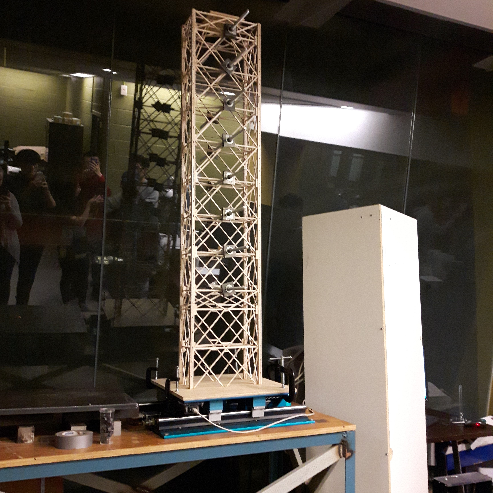

Because balsa wood is not a typical building material, it is necessary to understand the structural properties of the wood.
To do so, a number of small-scale tests were conducted to verify such properties.
This includes a three point bending test, tensile coupon testing, and connections testing, all of which offered valuable insight into the material strength of balsa wood and how the analysis model could be calibrated.
Most importantly, a full-scale shaketable test is also essential for understanding the fundamental vibrational properties of the structure.
Using the small shaketable at the University of Toronto, we are able to perform sine-sweep tests to find the fundamental period as well as the damping ratio of a particular structure.
With this information in hand, we are therefore able to effectively calibrate our analysis model to match the structural properties measured from these tests.
TESTING
